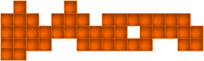
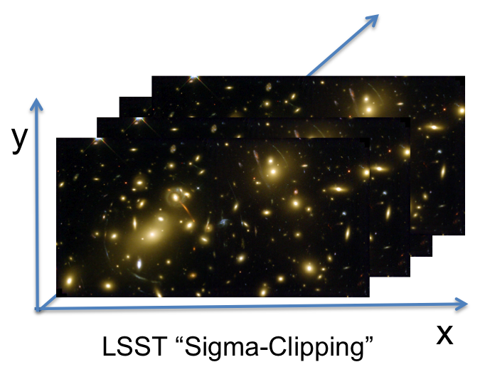
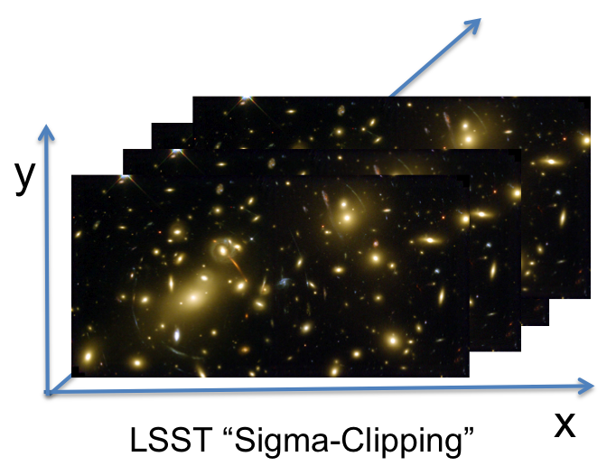

Scientific and commercial Internet users with extreme data base requirements always complained about the inadequacy of current commercial Data Base Management System (DBMS) offerings. Current commercial DBMS offerings are based on the standard relational model. Relational model is often inefficient for the types of data used for complex analytics.
Arrays are a natural data model for a significant subset of science users. In array-based systems, locality information is inherited into each cell by its dimensions values. Also dimensions provide a natural index for array databases that improves the performance of queries.
SciDB (http://scidb.org) is a new open source DBMS that is organized around multidimensional array data model, a generalization of relational model that can provide orders of magnitude better performance. SciDB is designed to store petabytes of data spread over large number of machines. High performance, high-availability, fault tolerance, and scalability are the main goals considered in the design of SciDB
 
